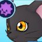

- 세대
- 성숙기
- 종족
 백신
백신- 속성
 무
무- 소비 메모리
- 8
- 장비 슬롯
- 1
스테이터스 (Lv.99)
HP156053위/81
SP13052위/81
ATK19921위/81
INT11062위/81
DEF15831위/81
SPD17720위/81
막대 길이는 등록된 디지몬 중 최고값 대비 비율이에요. 순위는 스테이터스가 등록된 디지몬끼리 비교해요.
필살기 1
철갑도 무 방어력 관통SP 20
적 1체물리위력 중간
디지몬 속성과 같음
적 1체에 무속성 중간 위력 방어력 관통공격. 크리티컬이 발생하기 쉽다.
상성별 대미지 배율 상대 종족(세로) · 속성(가로)상대 속성(세로) · 종족(가로)
×3 이상×2 이상보통×1 미만
| 상대 ↓ / → | |||||||||
|---|---|---|---|---|---|---|---|---|---|
| 백신 | ×1.00 | ×1.00 | ×1.00 | ×1.00 | ×1.00 | ×1.00 | ×1.00 | ×1.00 | ×1.00 |
| 데이터 | ×0.50 | ×0.50 | ×0.50 | ×0.50 | ×0.50 | ×0.50 | ×0.50 | ×0.50 | ×0.50 |
| 바이러스 | ×2.00 | ×2.00 | ×2.00 | ×2.00 | ×2.00 | ×2.00 | ×2.00 | ×2.00 | ×2.00 |
| 프리 | ×1.00 | ×1.00 | ×1.00 | ×1.00 | ×1.00 | ×1.00 | ×1.00 | ×1.00 | ×1.00 |
| 바이러스 | ||||
|---|---|---|---|---|
| ×1.00 | ×0.50 | ×2.00 | ×1.00 | |
| ×1.00 | ×0.50 | ×2.00 | ×1.00 | |
| ×1.00 | ×0.50 | ×2.00 | ×1.00 | |
| ×1.00 | ×0.50 | ×2.00 | ×1.00 | |
| ×1.00 | ×0.50 | ×2.00 | ×1.00 | |
| ×1.00 | ×0.50 | ×2.00 | ×1.00 | |
| ×1.00 | ×0.50 | ×2.00 | ×1.00 | |
| ×1.00 | ×0.50 | ×2.00 | ×1.00 | |
| ×1.00 | ×0.50 | ×2.00 | ×1.00 |
배율 칸을 누르면 계산식이 여기에 나와요.
SS(서포트스킬)
무사 기질
공격력과 크리티컬 발생률이 10% 상승한다.
계승기 (레벨업 습득) 3
이 디지몬이 레벨업으로 배우는 스킬이에요. 배운 스킬은 진화·퇴화해도 계속 쓸 수 있어요.
| 습득 Lv | 스킬 | 속성 | SP |
|---|---|---|---|
| 10 | 헤비 스트라이크 II 적 1체에 무속성 위력 90의 물리공격. 필중. | 6 | |
| 18 | 어택 차지 아군 1체의 공격력을 10% 올린다. | 6 | |
| 25 | 스피드 차지 아군 1체의 민첩을 10% 올린다. | 6 |
이 디지몬이 강한 상대 114펼쳐 보기
등록된 디지몬 중 필살기로 ×2 이상 대미지를 줄 수 있는 상대예요. 세대를 누르면 그 세대 목록이 보여요.
성숙기 같은 세대 31 · 다른 세대 상대는 도감에서 볼 수 있어요.
가드로몬×2.00가루몬(흑)×2.00 개굴몬×2.00
개굴몬×2.00 고스몬×2.00골드워매몬×2.00그라우몬×2.00
고스몬×2.00골드워매몬×2.00그라우몬×2.00 그레이몬(청)×2.00
그레이몬(청)×2.00 달팽이워매몬×2.00
달팽이워매몬×2.00 데블몬×2.00
데블몬×2.00 레어몬×2.00
레어몬×2.00 록몬×2.00
록몬×2.00 말벌몬×2.00모야몬×2.00
말벌몬×2.00모야몬×2.00 베지몬×2.00
베지몬×2.00 사이크로몬×2.00
사이크로몬×2.00 상굴몬×2.00스카몬×2.00
상굴몬×2.00스카몬×2.00 시스터몬 느와르×2.00시스터몬 시엘×2.00시스터몬C(각성)×2.00시스터몬N(각성)×2.00
시스터몬 느와르×2.00시스터몬 시엘×2.00시스터몬C(각성)×2.00시스터몬N(각성)×2.00 아이스데블몬×2.00
아이스데블몬×2.00 알카디몬 성숙기×2.00
알카디몬 성숙기×2.00 옐로우워매몬×2.00
옐로우워매몬×2.00 우가몬×2.00우드몬×2.00
우가몬×2.00우드몬×2.00 워매몬×2.00코어드라몬(녹)×2.00
워매몬×2.00코어드라몬(녹)×2.00 쿠가몬×2.00
쿠가몬×2.00 화이트스카몬×2.00
화이트스카몬×2.00

블랙가트몬×2.00진화 트리 · 깅류우몬까지 오는 길 + 다음 진화
왼쪽부터 진화 순서예요. 깅류우몬 오른쪽(점선 칸)은 바로 다음 진화 1단계예요. 그 뒤가 궁금하면 그 디지몬을 눌러 따라가 보세요. 선은 출발하는 디지몬의 색을 따라가요. 디지몬을 한 번 누르면 거기서 깅류우몬까지 가는 경로만 남고, 한 번 더 누르면 그 디지몬 페이지로 이동해요. 회색 칸은 아직 정보가 없는 디지몬이에요.
유년기I
유년기II
성장기
성숙기
완전체 ▸